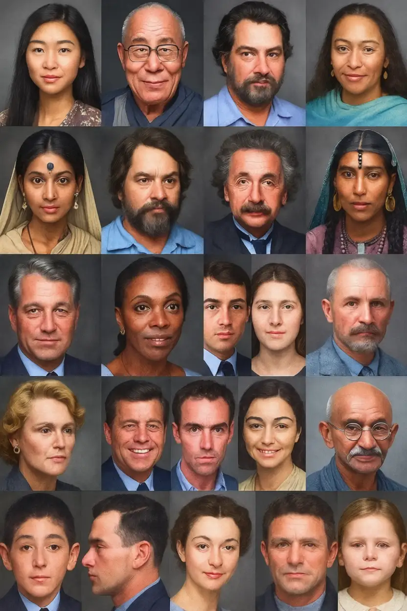

Morphopsychology
The Face, Mirror of the Self
Morphopsychology is an observational method that explores the relationship between physical form—particularly the features of the face—and the psychological or behavioural traits of an individual. Both human-centred and grounded in observation, this approach offers a path to deeper self-understanding and a more authentic connection with one’s true nature.
Certified in morphopsychology, I first applied this method in the context of professional recruitment, before extending it to more personal and individual guidance. Today, I use this tool to help you better understand yourself, recognize your deeper needs, realign with your inner compass and reclaim your unique place in the world.
Through a careful reading of the face, I offer a fresh and compassionate perspective on who you truly are.
What is Morphopsychology?
Morphopsychology is an observational discipline that studies the relationship between facial structure and psychological makeup. It is based on a simple yet profound principle: the body—and especially the face—is a living reflection of how we inhabit the world. Our features are not static; they evolve over time, shaped by experience, choices, inner tensions, and natural impulses.
Developed in the 20th century by psychiatrist Dr. Louis Corman, morphopsychology is founded on the idea that bodily form expresses vital rhythms—ways of perceiving, feeling, and acting. The face becomes a silent language, revealing deep needs, internal patterns, strengths, and vulnerabilities.
Unlike older approaches such as physiognomy, morphopsychology does not judge, categorize, or confine. It observes, connects, and illuminates. It invites us to understand ourselves more fully, to see others with greater clarity, and to cultivate a more conscious and compassionate relationship with our inner life.
This discipline can be applied in many areas: self-knowledge, personal or professional orientation, therapeutic support, and the enrichment of human relationships. Because it honours the uniqueness of every face, morphopsychology encourages us to recognize in each person a singular path—visible in form but rooted in being.
Through Morphopsychology, you are invited to redicover who you truly are, how your energy flows, and what your soul quietly longs for.